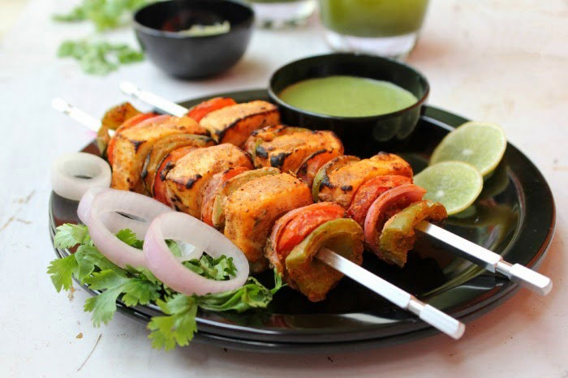

Paneer Tikka

Description
Paneer tikka is an Indian dish made from chunks of paneer
marinated in spices and grilled in a tandoor
Ingredients
Steps
- First whisk 2.25 cups of thick curd or hung curd till smooth in a bowl or pan.
- Add all the spices and herbs.
- Stir and mix well.
- Add the diced vegetables 1 medium to large bell pepper/capsicum, 1 medium to large tomato and 1 medium to large onion. Also add 250 to 300 grams paneer slices.
- Heat 1 tbsp oil in a non stick pan/tawa or a well seasoned cast iron skillet. Coat the paneer and veggies with the marinade and place them on the tawa.You can fry at a low heat or medium heat. I fried in 3 batches and overall used about 3 tbsp oil.